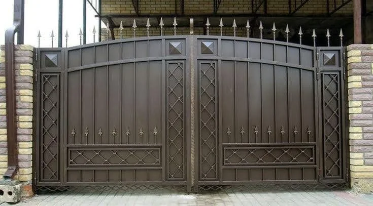
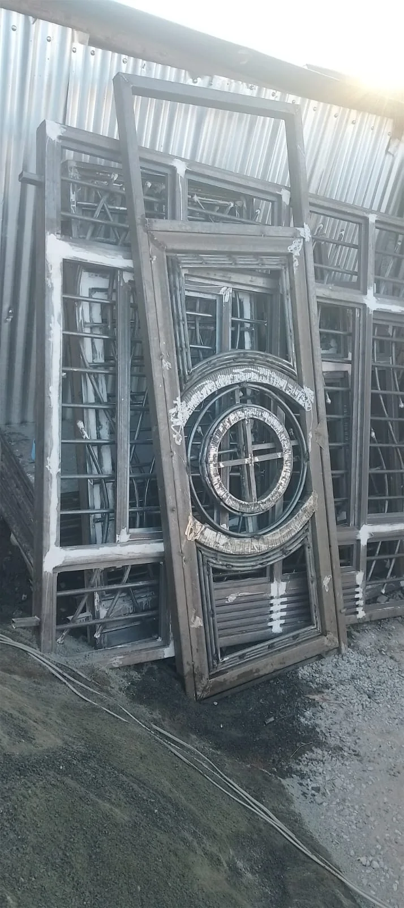
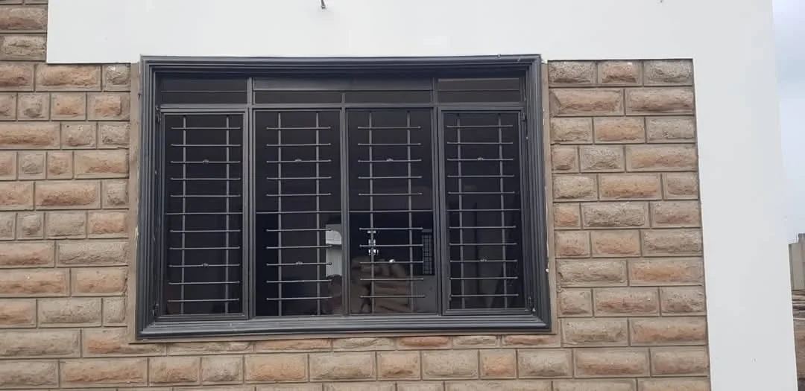
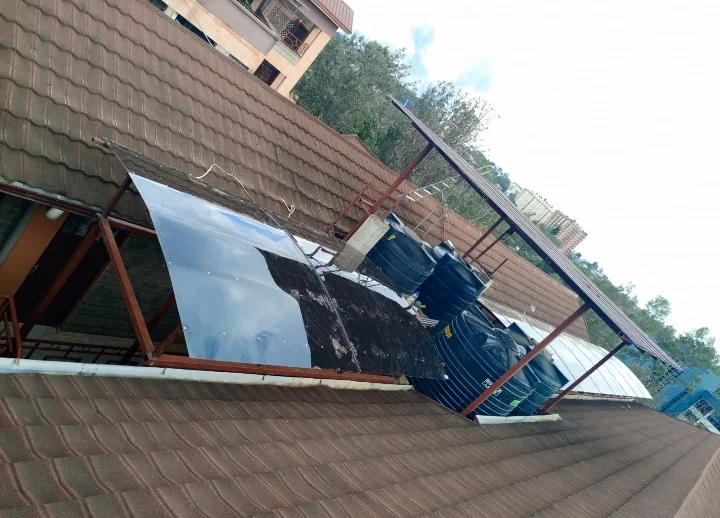
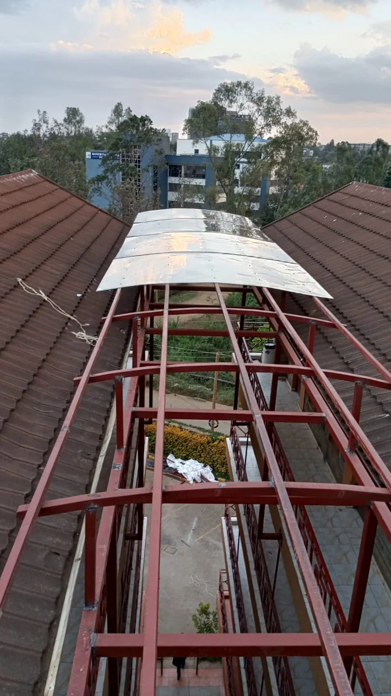
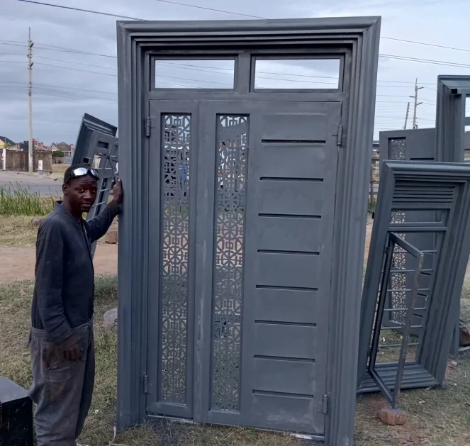
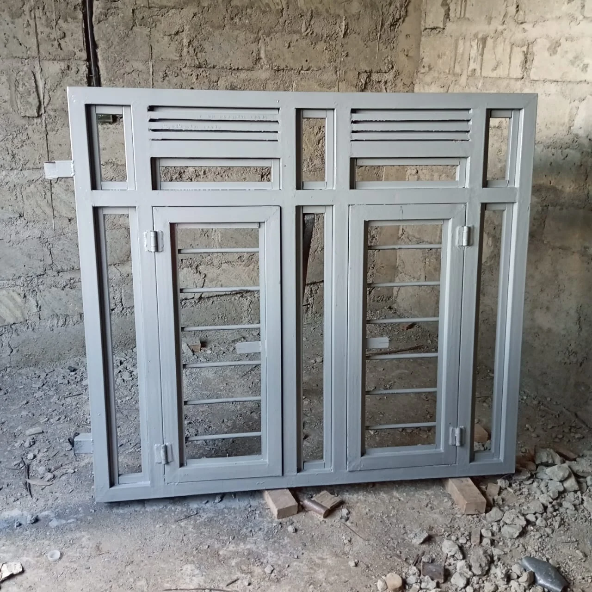

Modern Staircase Railings
Clean, contemporary staircase railings in steel, designed to suit your home and built to last.
Nairobi, Kenya · Custom Metal Fabrication
Transform your home or commercial property with expertly crafted steel railings, wrought iron designs, and precision metal fabrication.
Free site visit Itemised quote Installation included
Why choose us
Homeowners, architects and developers across Nairobi choose us for dependable workmanship, honest pricing and finishes that last.
Clean welds, tight joints and hand-checked finishes on every piece that leaves our workshop.
Quality steel sections, rust-resistant primers and paint systems built for Kenyan weather.
We measure on site, draw it up and confirm sizes with you before any steel is cut.
Our own team delivers and fits your work, so it sits straight, solid and secure.
Bring a photo or an idea. We turn it into a design made for your property.
Clear, itemised quotes with no surprises, and good value at every budget.
What we build
From a single window grille to a full building's railings, every piece is made to measure in our workshop and installed by our own team.
Clean, contemporary staircase railings in steel, designed to suit your home and built to last.

Classic scrollwork and lattice patterns hand-crafted for balconies, stairs, gates and fences.
Strong balustrades and handrails for stairs, mezzanines and walkways, made to your exact dimensions.
Safe, stylish balcony railings fitted to apartments, villas and commercial blocks across Nairobi.

Made-to-order steel items built in our workshop from your sketch, photo or drawing.

Window grilles, doors, gates, security bars and repairs for homes and compounds.

Welding and metal works for shops, rental blocks, institutions and construction sites.
Swing and sliding gates in modern, classic and decorative designs with secure locking.

Canopies, roof frames, carports and support structures engineered for strength and durability.

Laser-cut screens, feature panels and bespoke details for architects and interior designers.
Heavy-duty steel doors with solid frames, quality locks and a finish that looks as good as it protects.

Security window frames and grilles with vents, opening sashes and clean modern lines.
Portfolio
A selection of gates, doors, railings and structures from our workshop and sites. Tap any photo to view it larger.
Before & after
About us
Kush Welding Services specializes in premium staircase railings, balcony installations, decorative wrought iron works, steel fabrication, and professional welding services.
Every project combines precision engineering, attractive design, and long-lasting durability. We build in our own Nairobi workshop, so we control quality from the first cut to the final coat of paint.
Client reviews
What property owners say about working with Kush Welding Services.
Where we work
Free site visits across the city and its suburbs. Not on the list? Message us and we will confirm.
Questions
Quick answers about quotes, timelines and installation.
Still have a question?
Ask on WhatsAppPrice depends on size, design, the amount of steel used and the finish. We visit your site for free, measure, and send an itemised quote so you know the cost before work starts. You can also send photos or measurements on WhatsApp for a quick estimate.
Yes. We visit properties across Nairobi and nearby towns at no charge to measure, discuss designs and give a quotation. Call or WhatsApp 0796 039580 to book a time.
Yes. Send us a photo, screenshot or sketch on WhatsApp. We will adapt it to your measurements and tell you what is possible and what it will cost.
Small jobs such as window grilles can be ready in a few days. Gates, railings and larger structures usually take one to three weeks depending on size and finish. We give you a timeline with your quote.
We do both. Our team delivers and installs everything we fabricate, then inspects the finished job with you.
We work mainly in steel, with stainless, aluminium and polycarbonate for specific jobs. Finishes include primer and enamel paints in any colour, antique looks, and gold-tone or stainless trim.
Yes. We regularly serve Kiambu, Machakos, Kajiado and surrounding towns. Transport is included in your quote.
Free site visit · Free quote
Tell us what you need. We will visit, measure and send you a clear quote, with no obligation.
Get in touch
Fill in the form and your details open in WhatsApp, ready to send. Or call us directly.